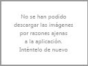

Recarga de imagen
{{ ::cam.lugar }}
Concejo: {{ ::cam.concejo }}
Categoría: {{ ::cam.categoria }}
Categoría: {{ ::cam.categoria }}
| Estado actual: {{::descripcion}} |
» Presión atmosférica: {{::presion}} HPa
» Humedad relativa: {{::humedad}} %
» Nubosidad: {{::nubosidad}} %
» Velocidad del viento: {{::velocidadViento}} m/s
» Dirección del viento: {{::direccionViento}}º
Fuente: OpenWeatherMap.com
{{ ::infoConcejo }}
Fuente: Wikipedia